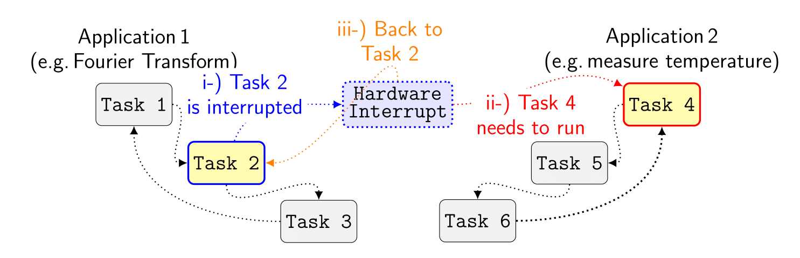
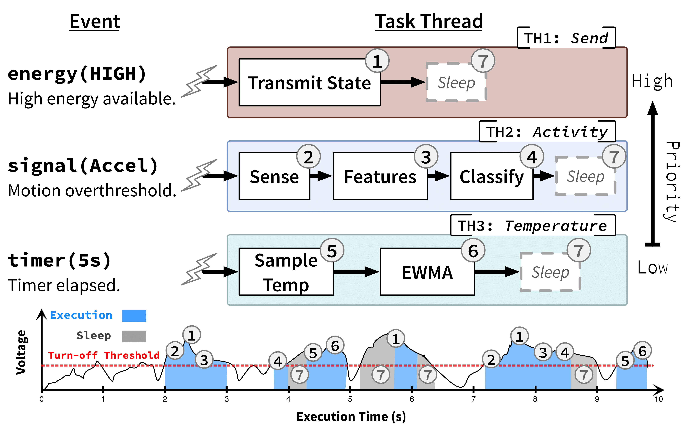

InK
Reactive kernel for intermittent systems
InK is a kernel designed to allow intermittent devices to operate reactively to their deployed environments. By exploiting interrupts, timers and priority based scheduling scavenged energy can be used to perform actions in a manner relative to users needs, effectively reducing irrelevant computation and increasing the responsiveness of the system to external events.
The current page is intended for the review process and fully anonymized. After the review process the website and the code will become publicly available and un-anonymized.


Repository
Download
-
To get InK you can visit our repository.
If you are using git:
git clone https://github.com/ink-anonymous/InK.git
More info:
- InK has no dependencies from external libraries. It is developed and tested on the MSP430FR5994 lauchpad. As a result the kernel is working with platforms respecting the architecture of the MSPFR59xx family. If you want to use it on different hardware (which supports non-volatile memory), modifications will be needed in files contained under mcu folder.
- InK can be imported as a CCS project and edited using CCStudio.
- Details about use and installation of InK can be found here.
Applications
- A set of applications designed on InK can be accessed at the corresponding directory.
- The applications are importable as CCS projects for easy deployment and compilation.
InKbot
-
Our transiently powered robot is controlled using InK. The design is open-sourced both for software and hardware. You can find code as well as schematics in our repository.
Evaluation Data
-
During our evaluation of InK's capabilities we employed a series of tests under various conditions. Being aware of the scarcity of
evaluation data in the intermittent domain we open-sourced our data hoping that more people will contribute in our cause of increasing
the availability of tools and information of transiently powered devices. The data and tools used can be found on our repository.
User Study
-
InK provides the abstractions necessary for developing application under intermittency while respecting the needs of the community for
reducing development cost and relieving the developer from unnecessary complexity. In our efforts to accommodate those concerns we employed a user
study to evaluate adoption to our programming model and asses the usability of InK comparing to tools currently available.
-
Results and data on the user study can be found on our repository.